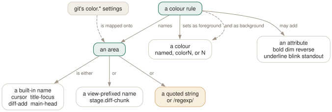

Day 14
Colours and sharp edges
Areas, large repositories, and every place the manual is wrong.
By the end of today you can
- colour any part of any view, including lines matching a pattern you choose
- make tig usable in a repository with a very long history
- know which parts of tigrc(5) and tigmanual(7) to distrust, and how to check
The third language
Settings shape the data, bindings shape the keys, and colours shape what your eye finds first. The syntax is one line, and the interesting part is that an “area” does not have to be something tig already knows about — it can be a pattern of your own.
color <area> <foreground> <background> [attributes]
color default white black
color cursor default default reverse
color diff-header yellow default
color tree.date black cyan bold # one view only
color "Reported-by:" green default # a literal string
color "/(TODO|FIXME)/" yellow default bold # a regular expression
Colours are white, black, green, magenta, blue, cyan, yellow, red and default — plus color0 … colorN or bare numbers for 256-colour terminals. Attributes are normal, blink, bold, dim, reverse, standout and underline.

/…/ is a regular expression. That turns the colour command from theming into annotation — you can make your own conventions visible in every view at once.Areas: three kinds, and the one worth your time
- Built-in names
- About seventy of them, grouped: interface (
cursor,status,title-focus,title-blur,search-result), columns (date,author,id,line-number), the main view's ref labels (main-head,main-tag,main-remote) and the diff markup (diff-header,diff-chunk,diff-add,diff-del). - View-prefixed names
- Any built-in name prefixed with a view:
stage.diff-chunkdiffers fromdiff.diff-chunk. Useful for making “I am staging” look different from “I am reading”. - Your own patterns
- A quoted string colours every line containing it. A quoted string of the form
/…/is a regular expression. This is the one worth your time.
Two related settings. git-colors maps git's own color.* configuration onto tig's areas, so your color.diff.new already applies; set it to no to make tig ignore git's colours entirely. And tig respects NO_COLOR in the environment.
Large repositories
tig is as fast as the git command behind it, so making it fast means asking git for less. In rough order of effect:
- Set
commit-order = default. The default isauto, which switches to topological ordering whenever the graph is on. Topological order cannot be streamed — git must walk ahead before emitting anything — so the first screen waits. tigrc(5) recommends this explicitly for long histories. - Limit the revisions.
tig -n1000ortig --since=1.year. You almost never want all 200,000 commits. - Press z when you have enough. It stops every background load; what has arrived stays usable.
- Turn the graph off with G, or fall back to
v1. Last resort:v1is faster and less accurate. - Set
refresh-mode.autowatches for changes; on a large working tree that costs.after-commandormanualis cheaper.
The environment, and what it is for
TIGRC_USER,TIGRC_SYSTEM- Override the config file paths. Set the second to empty for built-in defaults only.
TIG_EDITOR- The editor for e. Beats
$GIT_EDITOR,core.editor,$VISUALand$EDITOR. TIG_DIFF_OPTS- Diff options. Overridden by
diff-optionsand by the command line. TIG_LS_REMOTE- The command that lists refs. Narrow it to hide a thousand remote branches.
TIG_SCRIPT- A file of prompt commands run at startup. Also the basis of tig's own test suite.
TIG_TRACE- A path to log every git command tig runs. The first thing to reach for when a view is empty or slow.
TIG_TRACE is the one people do not know about and should. When a view is empty, or inexplicably slow, or showing something you did not expect, set it to a path and read the file: you get the exact git command tig ran, which you can then run yourself. Almost every “tig is broken” turns out to be “that git command returns that”.
And source is worth a line. It reads a file in place, so later commands still win, and source -q suppresses the warning when the file does not exist — which is what you want for a machine-specific fragment that is not on every machine.
Where this course disagrees with the manual
Everything in these fourteen days was checked against tig 2.6.1 rather than read off the page. Five things turned out to be wrong or missing, and the course follows the binary in each case:
- The
git gcbinding - tigmanual(7) documents a built-in external command
generic G → git gc. It does not exist in 2.6.1. G in the main view is:toggle commit-title-graph. The same table omits the refs, reflog and stash commands from Day 9, which do exist. - What F does
- tigmanual(7) says “toggle reference display”. True in the main and reflog views; in the generic keymap F is
:toggle file-name. mailmap's default- tigrc(5) says “Off by default”. The built-in default is
yes, confirmed with the system config disabled. - The palette example
palette-0 = redis not a validcolorcommand; it needs a background.- “A non-negative integer”
- tigrc(5)'s description of int values.
set tab-size = 0is rejected — “Value must be between 1 and 1024”. Bounds exist and are not documented per setting.
There are also four settings the binary accepts that tigrc(5)'s variable list does not mention at all: diff-noprefix, file-filter, rev-filter and id-width. The first three are what Day 4's % and ^ keys toggle.
What to read next, and today's habit
You can now read all three manual pages unaided, which was the point. The parts this course deliberately skipped: the full colour-area table in tigrc(5), the complete browsing-state variable list, pgrp and its Zsh interaction, the mouse settings, and the v1 graph internals. All of them are lookups now rather than lessons.
The habit that outlasts the course: keep ~/.tigrc small and defensible. Every line in the file this course built has a comment saying why it is there, and that comment is the only thing that will stop you being afraid of the file in eight months. Add lines the same way — one at a time, each earned by an annoyance you actually had.
New vocabulary
Commands
| Command | Does |
|---|---|
color <area> <fg> <bg> [attrs] | The whole syntax. |
source [-q] <path> | Read another config file in place. |
Options
| Option | Does |
|---|---|
refresh-mode | manual / auto (default) / after-command / periodic. |
commit-order | auto by default; default is faster on long histories. |
git-colors | Map git's colour settings onto tig's areas, or no to ignore them. |
horizontal-scroll | How far Left/Right move. Default 50%. |
mouse | Mouse support. Off by default, and it costs you text selection. |
Today's configappend to ~/.tigrc
Let the cursor line invert whatever the terminal theme already is, instead of forcing a colour pair that fights it. Survives changing terminal themes, which a hard-coded pair does not.
color cursor default default reverse
Make TODO, FIXME and XXX stand out anywhere they appear, in any view. A quoted area of the form /.../ is a regular expression matched against the whole line.
color "/(TODO|FIXME|XXX)/" yellow default bold
Refresh only on returning from an external command, rather than whenever tig notices a change elsewhere. Views stop reloading underneath you while you are reading a diff, but still update after you stage or commit something.
set refresh-mode = after-command
tig reads this only at startup. Reload without quitting by binding :source ~/.tigrc to a key (Day 12), or check it with tig 2>&1 | head — errors arrive as tig warning: lines before the first view draws.
Drillsdo these in a real terminal, today
Self-check
Answer out loud first, then unfold.
tigrc(5) gives palette-0 = red as its example for the graph palette. You put color palette-0 red in your config and get “Invalid color mapping”. Who is wrong?
The manual — or rather, the example is written in the git-config form and does not survive translation. The color command needs both a foreground and a background: color palette-0 red default is accepted.
While checking this, the range turned out to be real: palette-0 through palette-13 work and palette-14 is rejected with “Unknown color name”. Fourteen colours, as documented, but the example needs fixing.
tig takes eleven seconds to draw its first screen in your monorepo. What are the two settings to reach for, and which one should you not need?
First commit-order. It defaults to auto, which silently switches to topological ordering whenever the commit graph is enabled — and topological ordering means git cannot stream results, it has to walk further before it can emit anything. Setting it to default restores chronological order and lets the view fill immediately.
Second, limit what you ask for: tig -n1000 or tig --since=6.months. The one you should not need is the v1 graph — it is faster but less accurate, and it is only worth it once commit-order and a revision limit have failed you.
Your tig refreshes itself while you are reading a diff, and the cursor jumps. What is doing it, and what should you set?
refresh-mode, which defaults to auto: tig watches for modifications made through another view and reloads the ones affected. That is helpful while staging and disruptive while reading.
The four values are manual (never), auto (the default), after-command (only on returning from an external command) and periodic (every refresh-interval seconds, default 10). after-command is the setting most people actually want: it updates after you do something, and never while you are reading.
Which is authoritative when they disagree: tigrc(5), tigmanual(7), the help view, or :save-options?
:save-options, then the help view, then the manual pages. The first two are generated from the running program; the manual pages are maintained by hand and have drifted.
This course found five disagreements in 2.6.1 without looking hard, listed below. None of them is serious, and all of them would have cost somebody an afternoon. The habit worth keeping is cheap: when a documented thing does not work, dump the options and look.
Cheat sheet
Colours, speed, environment. The last line is the one to keep.
color <area> <fg> <bg> [bold|dim|reverse|underline|standout|blink]
areas cursor status title-focus diff-add main-head … (~70)
stage.diff-chunk one view only
"/(TODO|FIXME)/" a regexp: YOUR conventions, every view
colours 8 names + default, or color0..colorN / bare numbers
set commit-order = default # long histories: the big one
set refresh-mode = after-command # stop views moving while you read
tig -n1000 / --since=1.year # ask git for less z stop loading
TIG_TRACE=/tmp/t tig # log every git command tig runs
:save-options ~/tig-reference # the tiebreaker when the manual is wrong
Everything through Day 14
Keys
| Key | Does |
|---|---|
| m | Open the main view — the one-line-per-commit list. |
| d | Open the diff view for the selected commit. |
| s | Open the status view: the working tree. S does the same. |
| h | Open the help view: every binding that is live right now. |
| q | Close this view and fall back to the one underneath. Quits if it is the last. |
| Q | Quit immediately, however deep the stack. |
| R | Reload the current view by re-running its git command. |
| v | Show the version — and prove which build you are on. |
| z | Stop all background loading. For when you opened a 200,000-commit history. |
| D | Cycle the date column: default, relative, compact, custom, hidden. |
| A | Cycle the author column: full, abbreviated, email, user, hidden. |
| X | Show or hide the abbreviated commit ID column. |
| G | Cycle the graph in the main view: v2, v1, off. |
| F | In the main view, show or hide the ref labels. |
| # | Show or hide line numbers. |
| ~ | Switch the line graphics between ASCII and the drawing characters. |
| o | Open the option menu: the same toggles, with their current values. |
| jk | Move the cursor down and up. Arrow keys work too, with a caveat on Day 3. |
| Enter | Open the selected line. From the main view, splits and shows the diff. |
| Tab | Move focus to the other view in a split. |
| UpDown | Move to the previous/next entry — in the parent view, even from the child. |
| JK | Same as the arrow keys: next and previous entry. |
| O | Maximise the focused view to fill the display. |
| < | Go back to the previous view state. |
| , | Move to the parent: the parent directory, or the parent commit. |
| Space- | Page down and page up. |
| C-dC-u | Half a page down and up. |
| ] | Increase the diff context by one line. |
| [ | Decrease the diff context by one line. |
| @ | Jump to the next chunk header. Implemented as a search — see today's gotcha. |
| % | Toggle the file filter: show the whole commit, not just the file you came from. |
| W | Toggle whitespace-insensitive diffing. |
| $ | Highlight commit-title text past the conventional width. |
| / | Search forwards. Prompts for a regexp. |
| ? | Search backwards. |
| n | Next match. N for the previous one. |
| : | Open the prompt. |
| H | Jump to the HEAD commit, in the main view. |
| u | Stage or unstage: the file in the status view, the chunk in the stage view. |
| 1 | Stage or unstage the single line under the cursor. |
| 2 | Stage or unstage part of a chunk: from here to the end of it. |
| \ | Split the current chunk into smaller chunks. |
| ! | Revert: throw away the chunk or file under the cursor. Prompts first. |
| M | Resolve an unmerged file with git mergetool. |
| C | Commit. Runs git commit in the foreground, in the status view. |
| t | Open the tree view at the current revision. |
| f | Open the blob view: the contents of the selected file. |
| b | Open the blame view for the selected file. |
| e | Open the file in your editor, at the line under the cursor. |
| r | Refs view: branches, remotes and tags. |
| y | Stash view: the stash stack. |
| L | Reflog view: where HEAD has been. |
| g | Grep view: search file contents. |
| C(refs,reflog) | Check out the branch under the cursor. Prompts first. |
| !(refs,stash,reflog) | Delete the branch, drop the stash, or reset --hard. All prompt first. |
| A(stash) | Apply the selected stash, keeping the entry. |
| P(stash) | Pop it: apply and remove the entry. |
| C-r | Reload ~/.tigrc — once you bind it, as today's config does. |
Commands
| Command | Does |
|---|---|
tig | Open the main view for the current branch. |
tig status | Start in the status view instead. |
tig -C <path> | Run as if started in path. |
tig -v | Print the version and exit. Also reveals the optional features built in. |
tig show <rev> | Open a commit directly in the diff view. |
tig --word-diff=plain | Word-level rather than line-level diffing. |
:42 | Jump to line 42 of this view. |
:2f12bcc | Jump to that commit. |
:goto <rev> | Jump to a revision: a branch, a tag, HEAD~3, %(commit)^2. |
:!git <cmd> | Run a git command and show the output in the pager view. |
:edit | Run an action by name. Any action name works here. |
:q | Run the binding for a key. Same as pressing q. |
:echo <text> | Print a line in the status window. |
:save-display <file> | Write the current screen to a file. |
:set <name> = <value> | Change a setting for this session. |
:toggle <name> | Cycle a setting. :toggle diff-context +3 steps by three. |
:source <file> | Read a config file now. Later lines win over earlier ones. |
:save-options <file> | Write every current setting and binding to a file. |
tig blame <file> | Start in the blame view for a file. |
tig blame <rev> -- <file> | Blame the file as it was at that revision. |
tig blame -C <file> | Blame with copy detection for one run. |
tig show <rev>:<path> | Show a file's contents at a revision. |
tig refs | Start in the refs view. |
tig stash | Start in the stash view. |
tig reflog | Start in the reflog view. |
tig grep <pattern> | Start in the grep view. Takes git grep options. |
tig refs --branches | Limit the refs view to branches. |
tig <rev> | Start the main view at a revision instead of HEAD. |
tig a..b | Commits reachable from b but not a. |
tig b ^a | The same thing, written as a negation. |
tig --all | Every ref, as if all of refs/ were on the command line. |
tig -- <path> | Only commits touching that path. -- ends option parsing. |
tig -n20 --since=1.month | Limit by count and by date. |
tig +42 | Open with line 42 selected. |
git log -p | tig | Pager mode: colourise and navigate any git output. |
tig --stdin | Read a list of commit IDs from stdin. |
:toggle author-display | Cycle a column's display option from the prompt. |
:toggle commit-title-graph | Cycle a non-display column option. |
bind <keymap> <key> <action> | The whole syntax. |
bind generic <key> none | Unbind a key everywhere at once. |
:source ~/.tigrc | Re-read the config without restarting. |
bind <keymap> <key> !<cmd> | Run in the foreground, output shown. |
bind <keymap> <key> @<cmd> | Run in the background, no output. |
bind <keymap> <key> +<cmd> | Run and echo the first output line to the status bar. |
bind <keymap> <key> ?<cmd> | Ask before running. |
bind <keymap> <key> <<cmd> | Exit tig after running. |
bind <keymap> <key> ><cmd> | Reopen tig in the last view afterwards. |
color <area> <fg> <bg> [attrs] | The whole syntax. |
source [-q] <path> | Read another config file in place. |
Options
| Option | Does |
|---|---|
show-changes | Whether the working-tree rows appear at all. Default yes. |
show-untracked | Whether the untracked row appears. Default yes. |
reference-format | How refs are wrapped. Default [branch] {remote} <tag> ~replace~. |
split-view-height | Height of the bottom view in a stacked split. Default 67%. |
split-view-width | Width of the right-hand view in a side-by-side split. Default 50%. |
vertical-split | Stacked or side by side. Default auto. |
focus-child | Whether opening a child view moves the focus into it. Default yes. |
diff-context | Context lines around each change. Default 3. |
diff-options | Extra options for the diff view's git show. |
ignore-space | Whitespace handling: no (default), all, some, at-eol. |
diff-highlight | Run git's diff-highlight to mark intra-line changes. Off by default. |
diff-indicator | Show the leading +/- signs. Default yes. |
ignore-case | Search case handling: no (default), yes, smart-case. |
wrap-search | Wrap around the ends of the view. Default yes. |
history-size | Lines kept in ~/.tig_history. Default 500, 0 disables. |
status-show-untracked-files | Show untracked files. Default yes. |
status-show-untracked-dirs | Show the contents of untracked directories. Default yes. |
mailmap | Apply .mailmap. Default yes, whatever tigrc(5) says. |
blame-options | Default options for git blame. Empty by default. |
recurse-tree | Show every file recursively in the tree view. Default no. |
editor-line-number | Pass +<line> to the editor. Default yes. |
grep-view | Columns of the grep view. Adding file-name gives the git grep shape. |
main-options | Default options for the main view's git log. |
log-options | Default options for the log view. Default --cc --stat. |
main-view | Column list for the main view. reflog-view, refs-view and the rest follow the same shape. |
main-view-date | Shorthand: the date column of the main view alone. |
main-view-date-format | A strftime string, when the display mode is custom. |
main-view-id | Shorthand: show the commit ID column in the main view. |
tree-view-file-size | Shorthand: how the tree view shows sizes. |
refresh-mode | manual / auto (default) / after-command / periodic. |
commit-order | auto by default; default is faster on long histories. |
git-colors | Map git's colour settings onto tig's areas, or no to ignore them. |
horizontal-scroll | How far Left/Right move. Default 50%. |
mouse | Mouse support. Off by default, and it costs you text selection. |